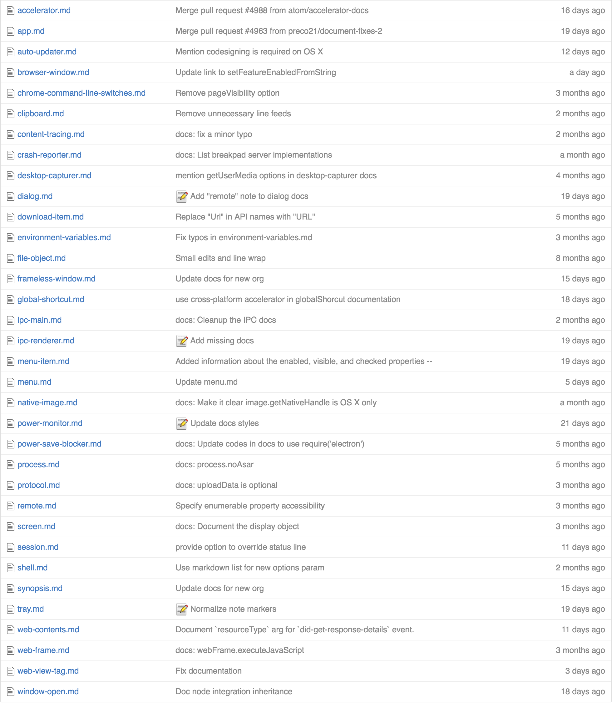
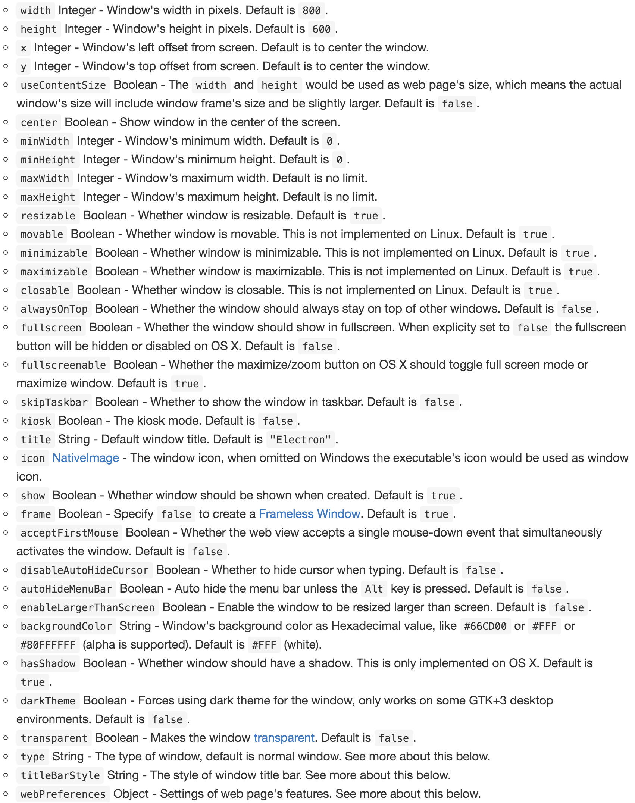
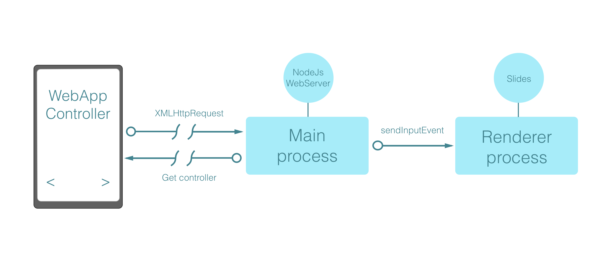

Electron.js
desktop app development
by Tomas Della Vedova
What we will see today
- Introduction to Electron
- Electron Architecture
- Electron's APIs
- My experience
- Coding session

- Build cross platform desktop apps with web technologies
- Formerly known as Atom Shell
- Made by GitHub
- electron.atom.io
github.com/electron
History
- Started in January 2013
- Built initially for the Atom text editor
- Renamed from Atom-shell to Electron
Alternatives
Electron is not the only solution to build awesome desktop apps with web technologies.
Electron vs NWjs
- Entry of Application
- Build System
- Node Integration
- Multi-context
- Check here
How works Electron.js
under the hood?
Electron holy bible
APIs
- 
APIs
- app
- BrowserWindow
- ipc Main/Renderer
- webContents
- Menu
App
// import the app module from electron
const { app } = require('electron')
// When application is ready
app.on('ready', createWindow)
// when all the windows of the app are closed
app.on('window-all-closed', closeApp)
Browser Window
// import the BrowserWindow module from electron
const { BrowserWindow } = require('electron')
// create a new window
let window = new BrowserWindow(options)
// load an html file
window.loadURL(path/to/html)
// show chrome dev tools
window.webContents.openDevTools()
// window closed callback
window.on('closed', windowClosed)
Browser Window options?
- 
ipc
Inter-process communication
Is a tool that make possible communicate between renderer and main process.
Both ipcMain and ipcRenderer are instances if EventEmitter class.
ipcMain
const { ipcMain: ipc } = require('electron')
ipc.on('async', (event, arg) => {
console.log(arg) // prints "ping"
event.sender.send('async', 'pong')
})
ipc.on('sync', (event, arg) => {
console.log(arg) // prints "ping"
event.returnValue = 'pong'
})
ipcRenderer
const { ipcRenderer: ipc } = require('electron')
let msg = ipc.sendSync('sync', 'ping')
console.log(msg) // prints "pong"
ipc.send('async', 'ping')
ipc.on('async', (event, arg) => {
console.log(arg) // prints "pong"
})
webContents
// window is the BrowserWindow object
// webContents is a property of the window object
window.webContents.send('async', 'pong')
window.webContents.sendInputEvent({
type: 'keyDown',
keyCode: 'Left'
})
Menu
// import Menu and Menu Item class
const { Menu, MenuItem } = require('electron')
// create a new instance of the menu
const menu = new Menu()
// add menu items
menu.append(new MenuItem(options))
menu.append(new MenuItem(options))
menu.append(new MenuItem(options))
My experience
- Cross platform is goodness
- Cross platform is hell
My experience
More we go deeper with the interaction between Electron and the OS, more we gain problems.

My experience
Modularize everything and create internal, OS agnostic, APIs
// returns the path of the configuration folder
function confFolder () {
return process.platform === 'win32' ? 'win\path' : 'mac/path'
}
My experience
By convention Windows saves the configuration file inside the executable folder, while Mac and Linux have to create a hidden folder in the user's home.
let fconf = path.join(confFolder(), 'config.json')
const conf = require(fconf)
Talking about APIs
- You can build isomorphic APIs by using Remote API.
- You can take advantage of is-electron module.
-
const e = require('electron') const is = require('is-electron') function closeApp () { if (is.main()) { // main process e.app.quit() } else { // renderer process e.remote.app.quit() } } is.main() ? exports.closeApp = closeApp : window.closeApp = closeApp
My experience
Some native third-party modules are compatible with a single OS

My experience
You will write tons of quickfix
- Code refactor will be your best friend
My experience
- If you design pixel calculated windows pay attention, because Mac creates a window of a specific dimension plus the header.
- Windows will not.
My experience
Create a Windows installer is damn hard.
My experience
Interact with Windows in general, is a mess.

The beauty of Electron
- Very active community
- Fast development cycle
- You can build whatever you want!
Built with Electron
- Atom Editor
- Slack
- Microsoft VS Code
- Nuclide
- Strem.io
- Wordpress.com
- Postman
- Google Play Music
- Ionic Lab
- Brave Browser
- Rocket.chat
- This Presentation ;)
How works this presentation
Let's code!
$ git clone https://github.com/delvedor/electron-workshop.git
$ cd electron-workshop
$ npm install
$ npm start